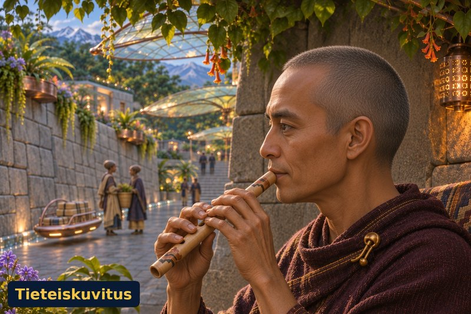

Faces of the Stone City
Fiction. AI illustrations of an imaginary stone city. Each pair shows first Jani Korpi's photograph from Peru and then an AI illustration based on its shape. The stone city and its inhabitants are invented.
01 · The optician adjusts a prism


The width of the forehead and the distance between the eye sockets guided the shape of the upper face. The jaw and mouth are the illustrator's choices.
Original photo 01 and observations · Pairs 04 and 10 may show the same object as this pair.
Read more about the page and show all 13 pairs
The page is based on Jani's idea of an advanced, imaginary society that preceded humans. The skulls in the source photos are human remains. In the studied Paracas material the long head has been interpreted as shaping done in childhood; the individual data of the particular skulls Jani photographed are open. The stone city and its inhabitants are invented.
Each pair shows first Jani's photograph and next to it or below it an AI illustration, that is, fiction made with the help of AI from the shape in the source photo. The number links the source photo and the illustration. The lower jaw is often missing from the source photos, so the jaw and mouth are the illustrator's decisions. The figures' expressions, skin tone, hair and daily life belong to the stone city. The illustration cannot tell us the facial features, species or appearance of the deceased.
What do the skulls tell us?Fact page: photos 01–11, exhibition labels and published research.
02 · A load of stone passes down the lane


The figure's forehead rises fairly upright. The model was the pale skull in the top row of the video compilation.
03 · The stonecutter checks a joint


In the side view turned to the right, the most important shape is the line from the forehead to the backward-curving back of the head.
04 · The gardener examines a seed pod


The round shape of photo 01 recurs in the upper face. The hands help to judge the proportions of the source photo.
Original photo 04 and observations · Pairs 01 and 10 may show the same object as this pair.
05 · The water master levels a channel


The starting point was the left-facing profile of the skull in the foreground. The curve of the back of the head continues behind the ear.
06 · The weavers examine a cloth


The crown of the left-hand skull slopes backwards. The outline of the right-hand one rises more upright.
07 · A meeting at the maize market


The three angles gave the idea for three different facial outlines. The middle market figure is imagined as an adult.
08 · A glass canopy runs from the gate


The more upright shape of the left-hand skull and the gentler forehead line of the right-hand one are best seen by comparing the sides.
09 · The song of the water wheel


The different slope of the left and right heads gives faces to two inhabitants bending over the water wheel.
10 · The flute player in a stone lane



The side view shows the round crown and the edge of the eye socket. The shape of the player's lips and jaw is imagined.
Original photo 10 and observations · Pairs 01 and 04 may show the same object as this pair.
11 · Exchanging baskets in the terrace city


The many outlines in the display case gave rise to a city view. The inhabitants in the foreground were designed for this scene.
Cairo's stone faces and Peru's skulls
The Amarna heads are sculptures, and museums describe the elongated crown as a stylistic feature of Amarna art (Global Egyptian Museum, JE 44869 · Egyptian Museum, Berlin, ÄM 14145). The Peruvian skulls are human remains; in the studied Paracas material the long head has been interpreted as shaping done in childhood (research background). The link between them is only visual.
Pairs 12 and 13 set the stone heads Jani filmed at the Egyptian Museum in Cairo on 15 February 2024 alongside the Peruvian skull photos and the stone city figures. The Cairo source images are crops of stills from Jani's video (museum tour from 51:31). Bystanders' faces have been blurred. The Cairo photos and research background are also on the fact page: Cairo 2024.
The object numbers cannot be made out in Jani's frames, so the museum's object record is a point of comparison, not an identification. The collection of the Egyptian Museum in Cairo includes the quartzite head JE 44869 found at Tell el-Amarna, which according to the Global Egyptian Museum is probably Meritaten, Akhenaten's eldest daughter. The German Deutsche Orient-Gesellschaft excavated it in 1912 from the workshop of the sculptor Thutmose (Global Egyptian Museum). A stone face of an Amarna princess of the same type is also in New York (The Met, Head of a princess from a group statue). The Cairo museum's own object record: Head of Princess, daughter of Akhenaten.
12 · The weaver mends a shade cloth

Look at the curve of the crown, the line of the forehead and how far the back of the head extends. Exact proportions cannot be compared between photos taken from different directions. Below, the illustrator's interpretation.

13 · The channel gauger adjusts a sluice

Look at the curve of the crown, the line of the forehead and how far the back of the head extends. Exact proportions cannot be compared between photos taken from different directions. Below, the illustrator's interpretation.

The same display in the Peruvian video

The common point helps to identify the display. The exact find site and the identity of the objects in the display case remain open. Photo 09 on the fact page.
Another example from Amarna: the Berlin family relief

The Berlin family relief shows how the side profiles of the royal family were also depicted carved into a flat stone surface. The daughters' crowns lengthen backwards. According to the museum, the feature is a pure stylistic device and not a sign of a hereditary or intentionally produced shape (the museum's description of the relief).
The figures' expressions, skin tone, hair and daily life belong to the imagined stone city. Some of the photos show the same object from different directions.